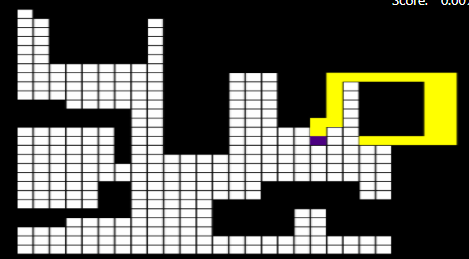

DRON - RECUEE MISSION
Silvia Calvo Cabello
Silvia Calvo Cabello
El objetivo principal de este proyecto es desarrollar un sistema autónomo que permita a un dron localizar y rescatar personas en zonas donde se ha perdido el contacto con el barco de rescate. Este dron deberá ser capaz de identificar caras humanas en imágenes capturadas por su cámara, navegar a las posiciones correspondientes, y así proporcionar ayuda en entornos hostiles o de difícil acceso. Para lograr este objetivo, se emplea un algoritmo de detección de rostros basado en el método de Haar, combinado con un sistema de control de movimiento autónomo para el dron. El sistema debe ser capaz de interpretar coordenadas globales, detectar las caras en las imágenes y orientar al dron hacia el lugar exacto donde se encuentra la persona que necesita ayuda. El algoritmo de detección de rostros de Haar es un método popular en visión por computadora para localizar y reconocer objetos dentro de imágenes. Este enfoque se basa en el uso de características simples que describen la diferencia en la intensidad de píxeles en una imagen, lo cual permite detectar patrones como rostros, ojos, sonrisas, entre otros. El modelo de Haar es entrenado previamente para identificar estas características a través de un conjunto de imágenes etiquetadas. En este proyecto, el sistema utiliza Haar específicamente para detectar caras humanas, lo que resulta útil en situaciones de rescate donde la identificación de personas es crucial. Sin embargo, una de las limitaciones del detector Haar es que funciona de manera óptima cuando las caras están orientadas rectamente (con una inclinación de hasta ±10 grados). Por esta razón, cada imagen capturada por el dron es sometida a una rotación para asegurarse de que el sistema detecte las caras sin importar su orientación, aumentando así la probabilidad de éxito del rescate. El entorno en el que opera el dron está modelado en un sistema de coordenadas bidimensionales (X, Y) con el barco de rescate como punto de referencia. El eje X es positivo hacia el norte, y el eje Y es negativo hacia el este. Para garantizar que el dron pueda navegar de manera eficiente, las posiciones geográficas del barco de rescate y de las personas perdidas están representadas en el sistema de coordenadas UTM (Universal Transverse Mercator). Dado que las coordenadas en las imágenes están en píxeles y las coordenadas del mundo real están en unidades geográficas, es necesario realizar una conversión de coordenadas entre estos dos sistemas para poder ubicar al dron correctamente. En este proceso, se utiliza un offset de referencia (por ejemplo, (40, 30)) que permite al dron calcular las posiciones de las personas con respecto al barco. Además, cuando se detecta una cara en una imagen, se deben transformar las coordenadas del píxel donde se encuentra la cara en coordenadas geográficas, teniendo en cuenta la orientación del dron en ese momento. Esta transformación es crucial para que el dron pueda navegar correctamente hacia el lugar exacto donde se encuentra la persona a rescatar.Se hace de la siguiente manera: se crea un vector desde el centro de imagen(dron) hasta el pixel y se proroga hasta detectar z = 0 El dron utiliza un algoritmo de movimiento en zig-zag para cubrir de manera eficiente el área en busca de personas. El patrón de movimiento es diseñado para cubrir una gran extensión del terreno, desplazándose hacia el norte, girando hacia el este, avanzando unos pasos y luego girando hacia el sur, repitiendo este proceso continuamente hasta asegurar que toda la zona esté inspeccionada. Esta estrategia de movimiento garantiza que el dron recorra un área amplia, minimizando la posibilidad de pasar por alto una persona. Además, al ser un algoritmo simple, el dron puede operar de manera eficiente en entornos desconocidos sin necesidad de realizar cálculos complejos sobre el terreno. A lo largo del proyecto se realizaron diferentes versiones del algoritmo, ajustando su comportamiento hasta conseguir una cobertura completa y eficiente del entorno.
ALGORITMO Nº1 - PRIMERA APROXIMACIÓN
En la primera versión, se intentó crear un mapa en rejilla en Unibotics. Inicialmente hubo dificultades para representar las celdas y convertir las posiciones del robot en píxeles.En esta etapa, el HAAR no estaba completamente implementado: el robot avanzaba sin control de dirección estable y no resolvía bien los puntos críticos. El cálculo de retorno se hacía mediante la distancia Manhattan, pero esta no consideraba los obstáculos ni las celdas ya visitadas, provocando bloqueos frecuentes.
En esta versión se cambió el regristro del mapa ya que antes las delcillas se hcaian con un tamaño de 40 pixeles pero era necesario bajarlo a un tamaño menor del robot por lo que se puso en 33. de esta manera no quedaban huecos vacíospor el recorrido.
Esto hace que tenga mas celdillas y lo hace más lento pero limpia más zona y mejor.

- VIDEO DE MUESTRA En los siguientes videos (reproducido a velocidad x2) puede verse la ejecución del robot en Gazebo en las 3 versiones.
Ver el video V1